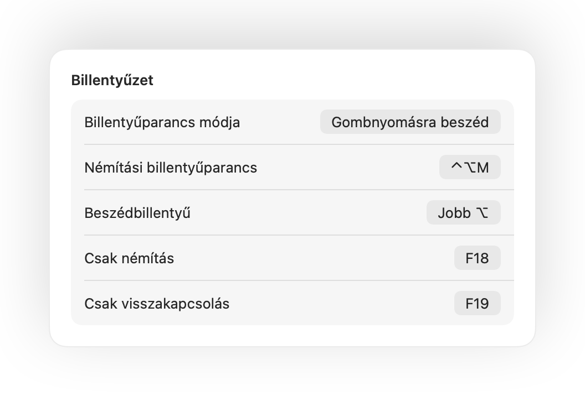

Nyomja meg az AirPodsot a némításhoz
Hívás közben nyomja meg egyszer a szárat a némításhoz, majd újra a visszakapcsoláshoz. Még a Chrome-ban is működik, ahol a Google Meet és más webes hívások figyelmen kívül hagyják az AirPods megnyomását.
Muffle Macre
Nyomja meg az AirPodsot vagy egyetlen billentyűparancsot. A Muffle magát a mikrofont kapcsolja ki, így a Google Meet, a Zoom, a Teams, a Slack és az összes többi alkalmazás csak csendet hall.
3 napig ingyenes. Utána egyszeri fizetés, nincs előfizetés. macOS 14 Sonoma és újabb rendszerekhez.
Némítson, válasszon mikrofont, zárolja a mikrofonszintet, és kapcsolja be vagy ki a funkciókat közvetlenül a menüsorból.
A Muffle hardverszinten némítja a mikrofont, így mindegy, melyik app, böngésző vagy lap használja éppen.
Bármilyen hívás közben nyomja meg a szárat. A Muffle magát a mikrofont kapcsolja ki, így a Meet, a Zoom, a Teams és minden más alkalmazás semmit sem hall.
A Muffle felismeri a hangját, és emlékezteti, mielőtt az egész ötletét a semminek magyarázná el.

A legtöbb némítógomb csak egyetlen alkalmazást némít el. A Muffle magát a mikrofont kapcsolja ki, így a Macen minden alkalmazás csak csendet hall.
Hívás közben nyomja meg egyszer a szárat a némításhoz, majd újra a visszakapcsoláshoz. Még a Chrome-ban is működik, ahol a Google Meet és más webes hívások figyelmen kívül hagyják az AirPods megnyomását.
Ha némítás közben kezd el beszélni, a Muffle azonnal figyelmezteti, még mielőtt a semminek mondaná el a gondolatait.

A Control-Option-M billentyűkombináció mindenhol némít, még akkor is, ha a hívás egy háttérben futó lapon van. Tartsa lenyomva a beszédhez, és engedje el az újbóli némításhoz.
Egy kis lebegő gomb mutatja a mikrofon állapotát a hívások során. Kattintson rá a némításhoz vagy a visszakapcsoláshoz.

Válassza ki a billentyűparancs működését: érintse meg az átváltáshoz, tartsa lenyomva a beszédhez, vagy köhögéshez némítsa el lenyomva tartva. Adjon meg külön billentyűt a némításhoz és a visszakapcsoláshoz, vagy tartson lenyomva egyetlen billentyűt, például a Jobb Optiont vagy egy extra egérgombot.

Csak egy mondatra kapcsolta vissza a mikrofont? Ha utána a kiválasztott ideig csendben marad, a Muffle újra némítja. Csak az Ön hangja számít, a gépelés vagy a háttérzaj nem.
Csendes szobában az AirPods használatakor a Muffle a Mac mikrofonját javasolja, így az AirPods teljes minőségben játssza le a hívást. Ha zajos lesz a környezet, visszajavasolja az AirPods mikrofonját.

A Chrome, a Zoom és a Teams maguktól módosítják a mikrofonszintet. Rögzítse az értéket, és a Muffle azonnal visszaállítja.
Indítson minden hívást némítva, kapcsolja vissza a mikrofont a hívás végén, és némítson automatikusan, amikor zárolja a Mac képernyőjét.

Ha a headset hívás közben lekapcsolódik, a Muffle még azelőtt némít, hogy a hívás átváltana a Mac mikrofonjára és beengedné a szoba teljes zaját.
Némítson a Parancsikonok alkalmazásból, a Siri segítségével, Stream Deckről, Raycastből vagy a Vezérlőközpont egyetlen gombjával.
Zöld vagy piros fény a képernyő szélein, színes menüsorikon, lebegő gomb és mikrofononként kikapcsolható hangjelzés. Kapcsolja be azokat, amelyek tetszenek.
A Muffle soha nem rögzít, nem tárol és nem küld hangot. Kizárólag be- és kikapcsolja a mikrofont, valamint leolvassa a hangerőt. Nincsenek fiókok, nincs analitika és nincs nyomkövetés.
Telepítse a Muffle appot a Mac App Store-ból, és engedélyezze a mikrofonhozzáférést.
Csatlakozzon egy híváshoz bármelyik alkalmazásban, a megszokott módon.
A némításhoz nyomja meg az AirPodsot, nyomja le a Control-Option-M billentyűket, vagy kattintson a menüsor ikonjára.
Igen. A Chrome nem adja át az AirPods némítási parancsát a webes hívásoknak, ezért a Muffle fogadja a jelzést, és magát a mikrofont némítja le. Ugyanez igaz minden böngészőlapon futó hívásra.
A hívásalkalmazás továbbra is mutathatja a mikrofont bekapcsolva, mivel a Muffle magát a mikrofont kapcsolja ki, nem az app gombját. A többiek így is csendet hallanak. A Muffle ikonja a menüsorban pirosra vált, amíg némítva van.
Az AirPods Pro, az AirPods 3 és újabb típusokkal, valamint az AirPods Max modellel, továbbá a hívásvezérlést támogató Beats eszközökkel. A billentyűparancs és a menüsor bármilyen mikrofonnal működik.
Igen. A Muffle minden olyan alkalmazással működik a Macen, amely mikrofont használ, legyen szó asztali alkalmazásról vagy böngészős hívásról.
Nincs. Próbáljon ki minden funkciót ingyenesen 3 napig, majd oldja fel a Muffle-t egyetlen egyszeri vásárlással.
A macOS csak azoknak az alkalmazásoknak továbbítja az AirPods megnyomását, amelyek használják a mikrofont, így a Muffle hívások közben nyitva tart egy néma kapcsolatot. Semmit nem rögzít.
A Muffle kilépéskor automatikusan visszakapcsolja a mikrofont, így soha nem marad némítva a rendszer.
A macOS 14 Sonoma és újabb verziók. A Vezérlőközpont gombhoz macOS 26 vagy újabb verzió szükséges.
Igen. Válassza a Beállításokban a „Gombnyomásra beszéd” lehetőséget, és tartsa lenyomva a billentyűparancsot a beszédhez. Egyetlen billentyűt is lenyomva tarthat, például a Jobb Optiont vagy az fn billentyűt, illetve egy extra egérgombot.
Amikor egy hívás az AirPods mikrofonját használja, az AirPods hívás módra vált, amely gyengébb minőségben játssza le a hangot. Csendes szobában a Muffle inkább a Mac mikrofonját javasolja, így az AirPods teljes minőségben szólal meg.
Nem. A Muffle az Apple eszközön futó hangelemzésével ismeri fel a beszédet, így csak a beszéd számít. A gépelés, a kattintások és a háttérzaj nem, és semmi nem kerül rögzítésre.
Rövid, gyakorlati válaszok a Mac mikrofonjának némításához, minden alkalmazásban.
A Muffle 3 napig ingyenesen kipróbálható.